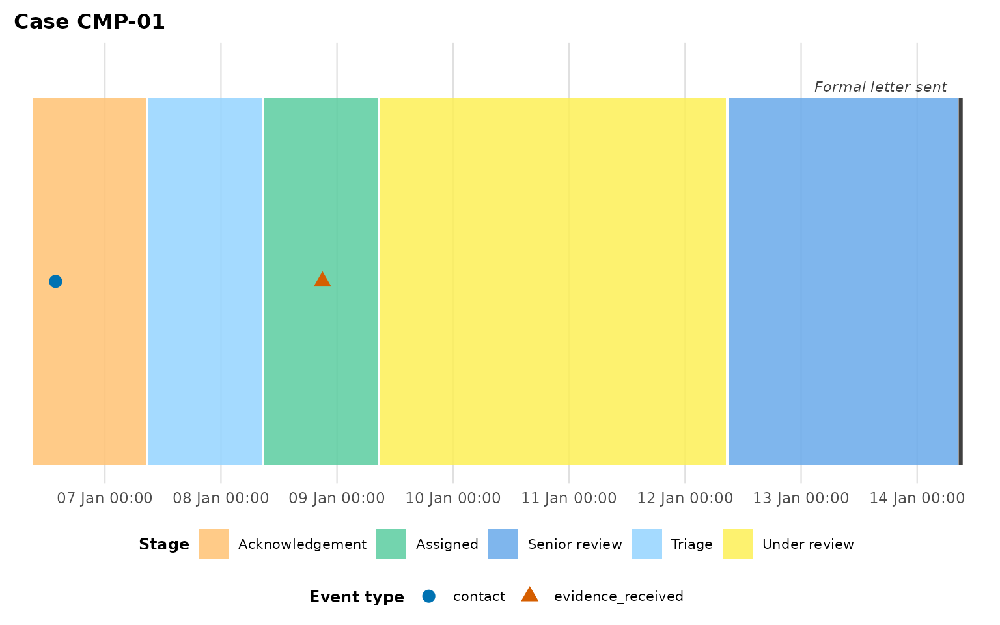
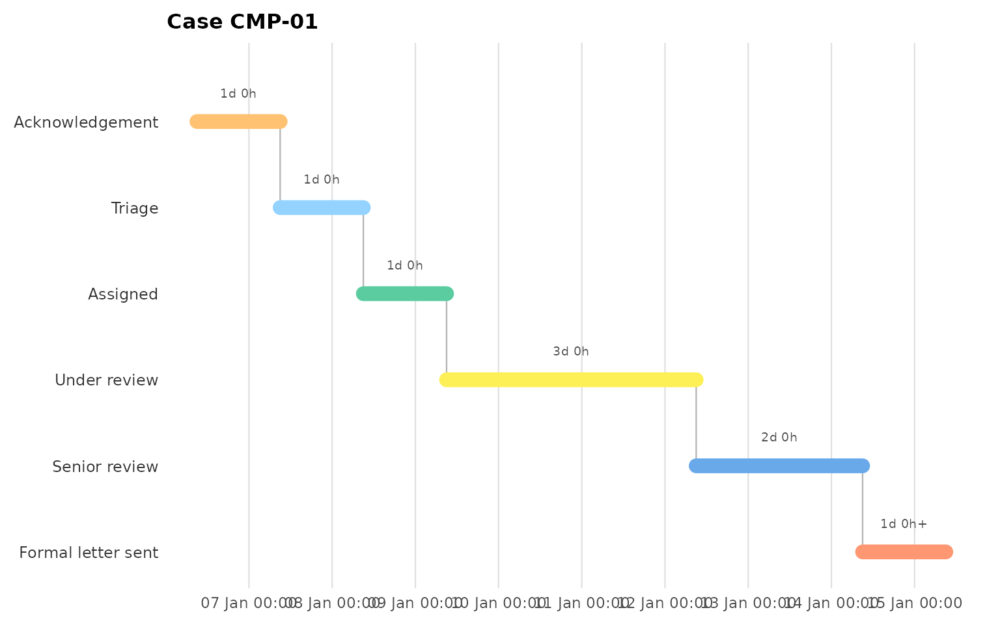
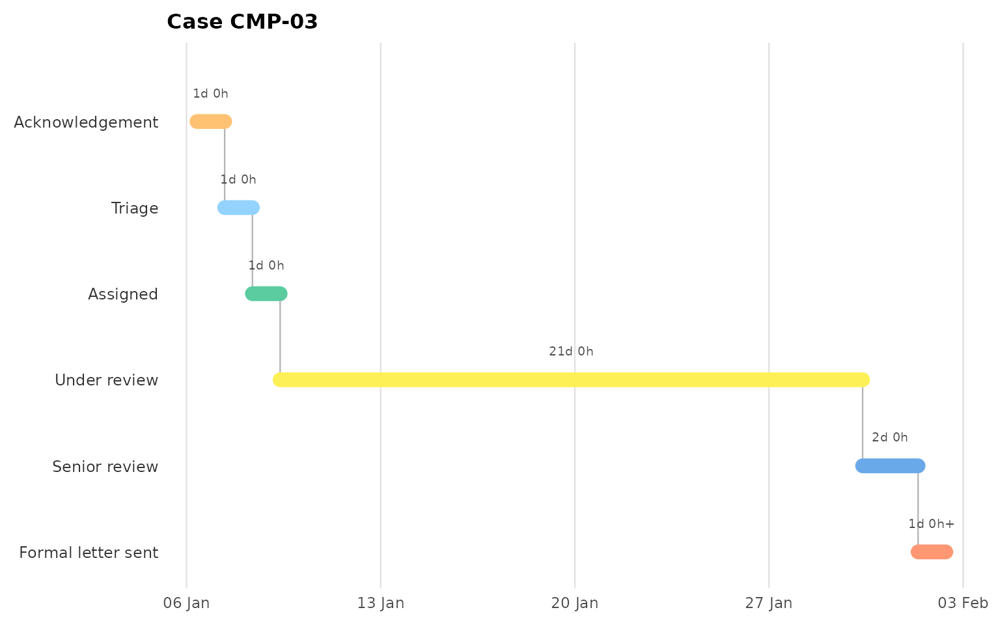
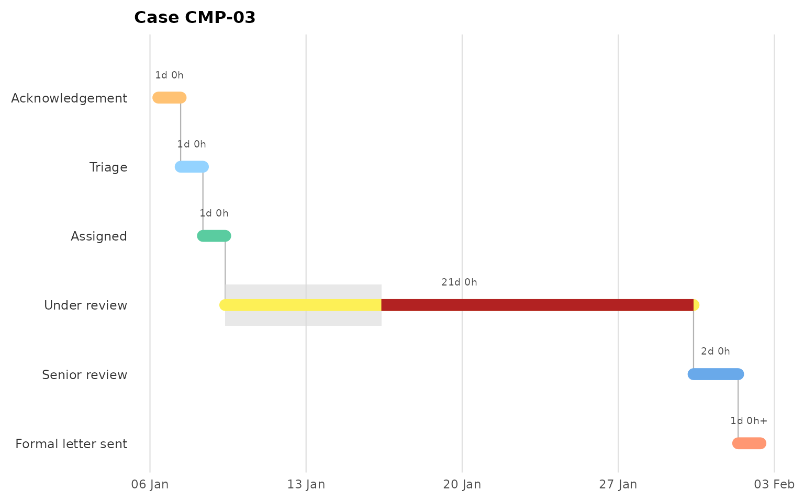
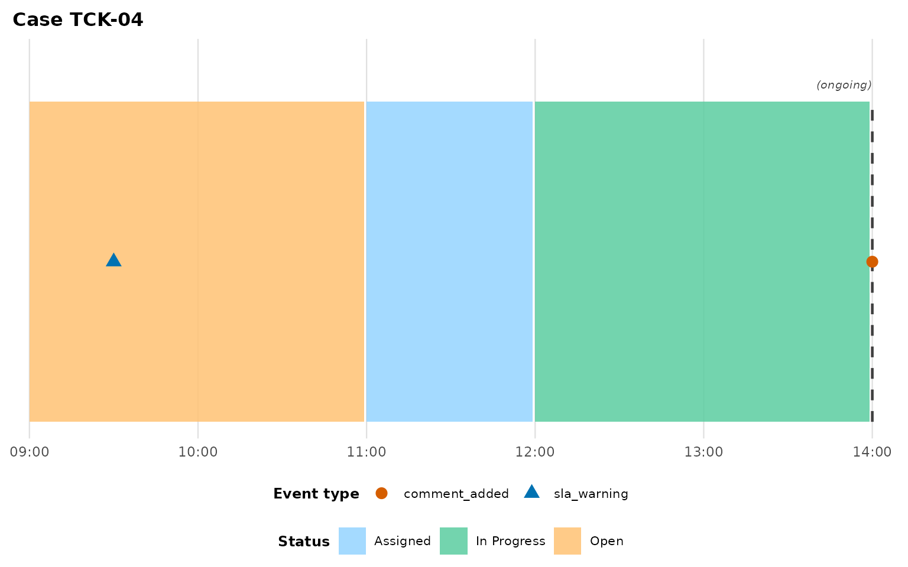

Linear processes: complaints and tickets
linear-processes.RmdNot every event log has a spatial component. A complaint moves
through fixed handling stages; a support ticket moves through fixed
statuses; a purchase order moves through fixed approval steps. None of
these cases occupy a physical location — but each occupies
exactly one state exclusively at a time, which is exactly the
structure plot_case_timeline()’s box derivation was built
for. This vignette uses the bundled complaint_example and
support_ticket_example datasets to show both ways of
visualising a linear process, and when to reach for each.
The datasets
complaint_example has eight complaints moving through
Acknowledgement -> Triage -> Assigned -> Under review ->
Senior review -> Formal letter sent, recorded as
act_type = "stage_change":
head(complaint_example)
#> complaint_id timestamp act_type activity
#> 1 CMP-01 2025-01-06 09:00:00 stage_change Acknowledgement
#> 2 CMP-01 2025-01-06 13:48:00 contact Phone call to complainant
#> 3 CMP-01 2025-01-07 09:00:00 stage_change Triage
#> 4 CMP-01 2025-01-08 09:00:00 stage_change Assigned
#> 5 CMP-01 2025-01-08 21:00:00 evidence_received Case notes received
#> 6 CMP-01 2025-01-09 09:00:00 stage_change Under reviewsupport_ticket_example is the same shape for a
support-ticket lifecycle (Open -> Assigned -> In Progress ->
Waiting on Customer -> Resolved -> Closed) — deliberately
non-healthcare, to prove the package isn’t tied to any one domain.
Band layout: “what happened when”
plot_case_timeline() works unmodified —
stage_change/status_change plays the role
location_move usually plays via state_events,
and state_label relabels the fill legend from “State” to
something that fits:
plot_case_timeline(
complaint_example, case_id = "CMP-01",
state_events = "stage_change", case_col = "complaint_id",
terminal_activities = "Formal letter sent",
state_label = "Stage"
)
This is the right view for “what happened, and when” — the point
events (contact, escalation,
evidence_received) sit on the timeline exactly like any
other point event.
Staircase layout: “where does the time go”
For a linear process, the more compelling question is usually
where the time goes — which stage is eating the SLA.
plot_stage_ladder() puts the state on the y-axis (first
stage at the top) and draws one horizontal segment per stage, so the
case walks down-and-right like a Gantt chart:
plot_stage_ladder(
complaint_example, case_id = "CMP-01",
state_events = "stage_change", case_col = "complaint_id"
)
Compare a complaint that stalls for weeks in one stage — the staircase makes the bottleneck immediately visible in a way the band layout’s uniform box heights don’t:
plot_stage_ladder(
complaint_example, case_id = "CMP-03",
state_events = "stage_change", case_col = "complaint_id"
)
Per-stage targets
Pass stage_targets — a named vector of stage name to
allowed dwell in hours — to render a light allowance band on each
targeted stage’s row, with any dwell beyond it redrawn in firebrick:
plot_stage_ladder(
complaint_example, case_id = "CMP-03",
state_events = "stage_change", case_col = "complaint_id",
stage_targets = c("Under review" = 24 * 7) # one week
)
Still-open cases
support_ticket_example’s "TCK-04" never
reaches "Closed" — the data feed simply stops. Passing
terminal_activities tells plot_case_timeline()
what “done” looks like, so it can tell the difference between a
completed case and one still in flight; a case that hasn’t reached a
terminal state gets its final box drawn open (a dashed edge with an
italic "(ongoing)" label) instead of silently inventing an
end for it:
plot_case_timeline(
support_ticket_example, case_id = "TCK-04",
state_events = "status_change", case_col = "ticket_id",
terminal_activities = "Closed", state_label = "Status"
)
Which view should I use?
-
Band layout (
plot_case_timeline()) when you want the point events on the same timeline as the state moves, or you’re comparing this process against genuinely spatial ones in the same report. -
Staircase (
plot_stage_ladder()) when the question is “where’s the bottleneck” for one case, especially withstage_targetsset. - Comparing many cases in either layout at once (rather than one at a
time)? See
vignette("cohort-analysis")— the staircase itself stays single-case for now; overlaying several cases on one ladder is a documented future direction, not yet implemented.